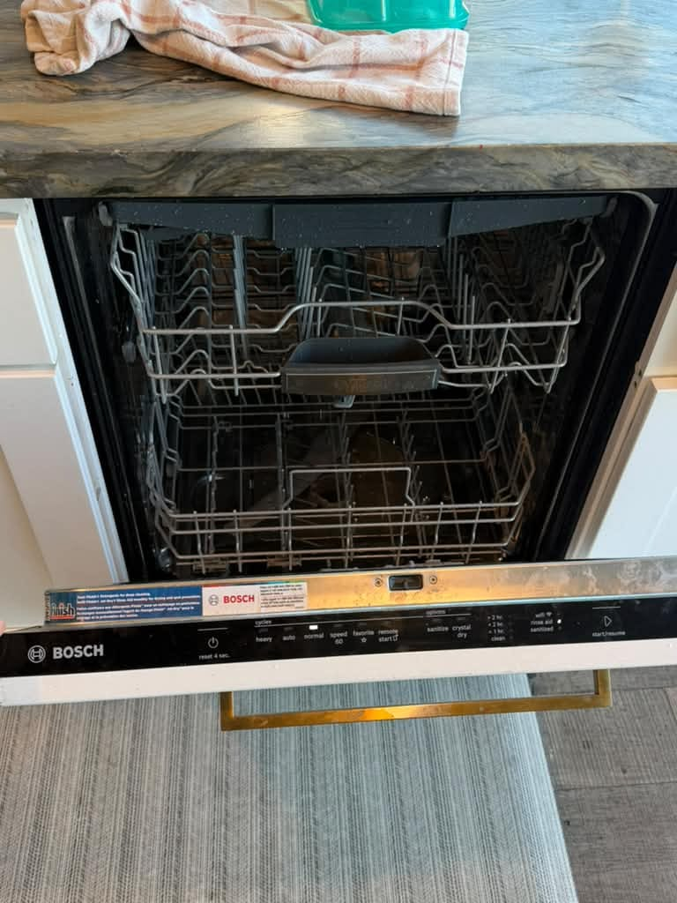
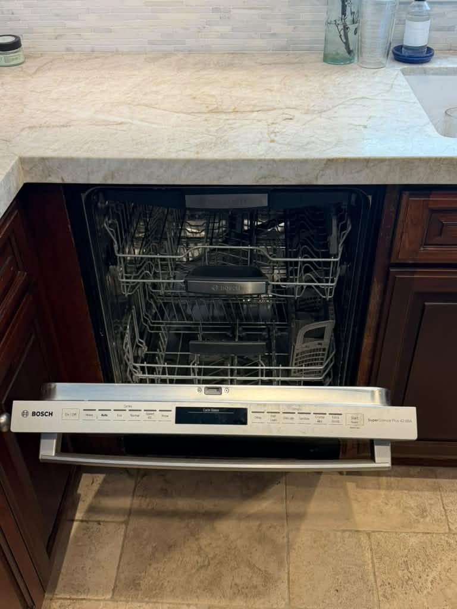
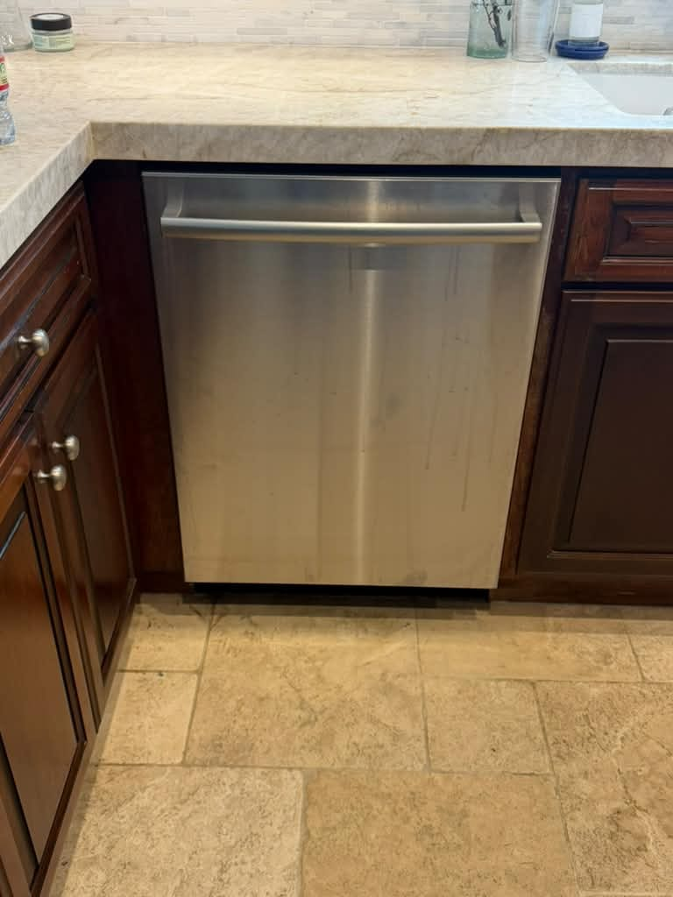
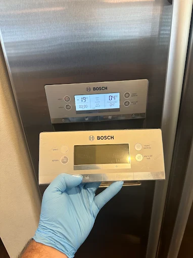
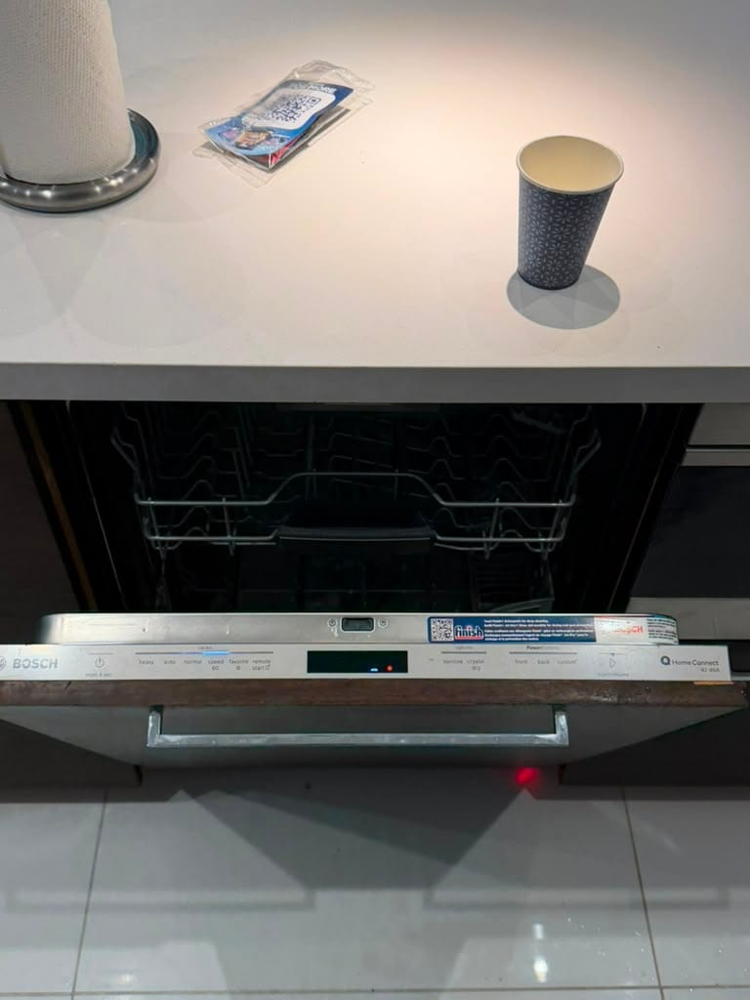
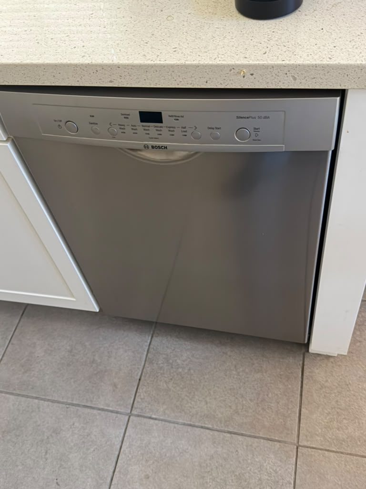
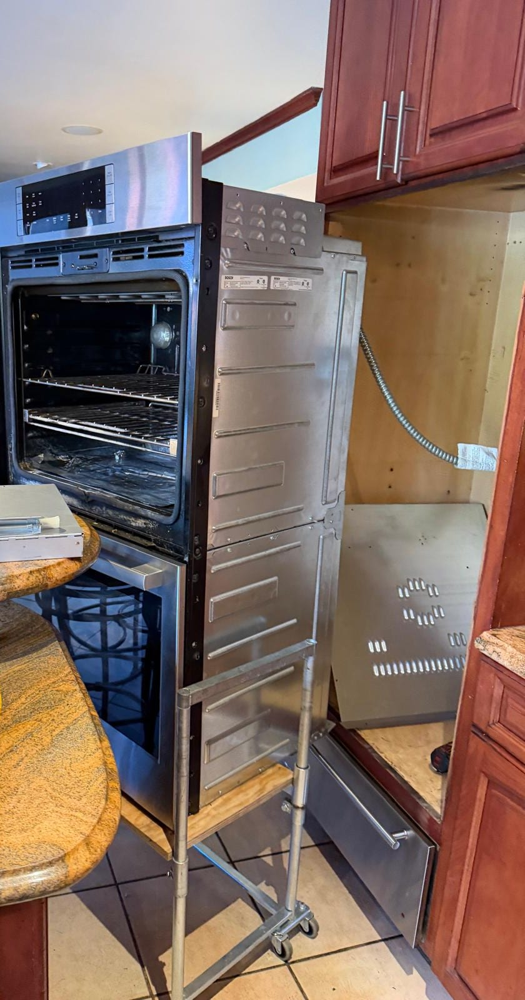

Bosch Dishwasher, Oven & Laundry Repair in Orange County
Dishwashers that won't drain or dry, E15 and E24 faults, wall ovens, induction cooktops, and compact 24" laundry. We know Bosch. Same-day service available.
5.0 · 156 Google reviewsMon–Sat, 8am–7pm.

What to expect
- Flat $99 diagnostic feeApplied toward the repair if you approve the work.
- Written quote firstItemized, before any work starts.
- 90-day parts, 30-day laborWarranty on every repair.
- Same-day serviceCall or request online.
Family-owned since 2017 · Licensed, bonded & insured
Recent Bosch Repairs
Recent Bosch work our technician completed in Orange County includes a dishwasher drain-pump replacement in Dana Point, another in Laguna Beach shown open and closed, a double oven display/power board replacement in Newport Beach, plus refrigerator and other dishwasher jobs in Orange County kitchens.

Laguna Beach, CA
Bosch Dishwasher Drain Pump Replacement, Open View

Laguna Beach, CA
Bosch Dishwasher Drain Pump Replacement, Closed View




Newport Beach, CA
Bosch Double Wall Oven Display/Power Board Replacement
Chasing a dishwasher error code instead? Read our guides on Bosch dishwasher error codes and Bosch dishwasher repair in Lake Forest.
What Our Customers Say
From our 156 verified 5-star Google reviews
AG came and fixed my oven so fast! He is extremely knowledgeable, he was able to accurately diagnose the problem in minutes. As he has the parts with him, he replaced the necessary part and cleaned up everything immediately. Thank you so much!!
We had a cooktop installed, and the wiring was a little short on the model we bought and the workmen had to get additional wiring to complete the job and did a wonderful job installing the cooktop. His price was so considerate I gave him a tip.
Ag was incredible! He came on time, knew exactly how to fix our Bosch dishwasher. He even cleaned out the drain that was causing the water to drain slowly. Would def recommend!
From Call to Fixed: How a Bosch Repair Works
Here is exactly what happens from your first call to a fully working Bosch appliance.
Request a RepairCall or Request Online
Reach us at (949) 629-5365 or submit the contact form. Share the model number, the series, and the symptom or error code, and we schedule you the same day when possible.On-Site Diagnosis
A technician arrives in a 2-hour window and tests the pump, filter, float, latch, sensor, or board to find the exact fault, rather than guessing at parts.Upfront Quote
You get a clear, itemized quote before we start. The $99 diagnostic fee is credited toward the repair if you proceed. No surprise charges at the end.Repair & Warranty
Common drain pumps, latches, and control parts ride in the van, so most repairs finish the same day. Every repair carries a 90-day parts and 30-day labor warranty: if the same problem returns within 30 days, we come back at no charge.
Pricing & Discounts
- $99 diagnostic fee: applied toward your repair when you approve the work. If you decide not to proceed, the $99 covers the visit.
- Multi-unit visits: first unit $99, each additional unit on the same visit $49.
- 20% off labor for repeat customers and seniors 60+ (cannot combine with other offers).
Estimates vary by brand, part availability, and diagnosis. Final quote is provided before repair. See full pricing guide
Diagnostic visit$99
- Applied toward the repair when you approve the work
- Itemized written quote before any work starts
- You decide whether to proceed
Dishwashers, Ovens, Cooktops, and Compact Laundry: Every Bosch We Repair
Bosch is best known for the quietest dishwashers in the country, but the lineup runs from built-in ovens to space-saving 24-inch laundry. We service all of it, and the same German engineering patterns show up across the range.
- Dishwashers (100, 300, 500, 800, Benchmark)
- The heart of the brand. Every series dries by condensation rather than an exposed element, and the common faults, a jammed drain pump, a clogged filter, an E15 flood trip, or a worn door latch, carry across all five tiers.
- Wall Ovens & Speed Ovens
- Single and double built-in ovens plus combination speed ovens. Bake and broil element failures, a drifting temperature sensor, and control-board or touch-panel faults are the repairs we see most on the electric cavities.
- Induction & Gas Cooktops
- Bosch induction is prized for speed and control. When a zone stops detecting cookware or throws a power fault, the cause is usually the power control board rather than the coil, so we meter under load before quoting parts.
- Compact 24" Washers & Heat-Pump Dryers
- The condo and closet-laundry favorite across Irvine and coastal OC. Drain-pump blockages and door-lock faults on the washers, and heat-pump dryers that leak or quit before clothes are dry, are the usual service calls.
- Refrigerators (Counter-Depth, French Door)
- Bosch counter-depth and French-door units run quiet and shallow. We handle cooling loss, a warm fresh-food section, ice-maker faults, and control problems, keeping the sealed system diagnosis precise.
- Benchmark Series
- Bosch's top tier adds CrystalDry, near-silent operation, and interior lighting. The premium features add sensors and boards to the diagnosis, and we service the Benchmark dishwashers and ovens the same day when parts are on the van.
Drain Faults, Flood Lockouts, and Bosch's Known Weak Points
Bosch appliances fail in specific, recognizable ways. These are the repairs our technicians handle most often on Orange County kitchens.
- Dishwasher Won't Drain (E24 / E25)
- Standing water at the bottom of the tub. Nearly always a clogged filter or a blocked drain hose, and clearing the filter fixes many cases. If it is clean, the drain pump impeller is jammed or the pump has failed. We find the exact blockage point.
- E15 Flood-Float Lockout
- Water in the base pan tripped the anti-flood float, so the machine locks out and runs the drain pump to protect your floor. Draining the pan clears it, but a hose, sump, or door-seal leak put the water there. We fix the source so it does not return.
- Dishes Come Out Wet
- Often normal, not a fault. Bosch dries by condensation with no heating element, so plastics stay damp and rinse aid is required. If you use rinse aid and dishes are still soaked, the heating circuit or rinse-aid dispenser has failed, and we test both.
- Dishwasher Won't Start or No Power
- A dark panel points to a tripped outlet, a failed door latch, or a control-board fault. One that lights but won't run usually is not latching. Bosch's top-edge hidden controls make a cracked ribbon cable or worn latch a frequent cause.
- Induction Zone Won't Detect Pans
- A cooktop zone that flashes or won't heat despite correct cookware. The fault is usually the power control board or a touch-control sensor rather than the coil itself. We measure under operating load to avoid replacing a good coil.
- Compact Washer Won't Spin or Drain
- On the 24-inch front-loaders, a blocked drain pump, a failed door lock, or an unbalanced load stops the spin. These stack-and-closet units are tight to service, and we carry the common Bosch pumps and locks.
- Heat-Pump Dryer Not Drying
- Ventless Bosch dryers reclaim heat through a condenser that clogs with lint over time. A dryer that runs long, leaves clothes damp, or leaks water usually needs the condenser cleaned or the heating circuit repaired.
- Oven Not Heating or Off-Temperature
- A Bosch wall oven that won't reach temperature or bakes unevenly usually has a failed bake element, a drifting temperature sensor, or a control fault. We meter the element and sensor to pin down which one before quoting.
Why Your Bosch Dishwasher Leaves Plastics Wet (and When It's Actually Broken)
This is the single most common Bosch "problem" that isn't one. Almost every other dishwasher has an exposed heating coil in the floor that bakes the dishes dry at the end of the cycle. Bosch took that coil out. Instead, the machine relies on the heat left over from a hot final rinse, then lets that warmth condense against the cool stainless steel tub, run down the walls, and drain away. It is quieter, gentler on plastics, and more energy efficient, but it dries differently than you may expect.
Two things make condensation drying work, and skipping either one leaves you with a puddle in the cups. First, you have to use a rinse aid such as Jet-Dry, because it breaks the surface tension so water sheets off instead of beading up. Second, glass and ceramic hold heat and dry beautifully, while lightweight plastics cool too fast to shed their moisture, which is why the Tupperware lid on the top rack is still wet when the plates are bone dry. That is the system working as designed, not a fault.
Bosch's higher tiers narrow the gap. The 500 series pops the door open an inch or two at the end to vent the humid air, and the 800 and Benchmark series add CrystalDry, a cartridge of zeolite minerals that pulls moisture from the air and converts it to heat, drying even plastics. So when a customer in Irvine or Newport Beach tells us the dishwasher "stopped drying," we first confirm the model, the rinse-aid level, and the cycle. If you are using rinse aid, running an Auto or heavy cycle, and dishes still come out soaked, then something real has failed, usually the heating circuit that warms the rinse water or the rinse-aid dispenser, and that we can test and repair.
Bosch Repair Costs: What to Expect in Orange County
A new Bosch dishwasher runs roughly $800 to $1,400, so for most faults repair is the clear financial choice. These are typical Orange County ranges, not quotes.
| Repair Type | Typical Range |
|---|---|
| Service call / diagnostic: Orange County market average (often credited toward repair) | $75 – $100 |
| Dishwasher drain pump (E24 / E25) | $180 – $350 |
| Filter clog / drain hose clear | $150 – $280 |
| Dishwasher control board | $250 – $450 |
| Door latch / detergent-rinse dispenser | $150 – $300 |
| Compact washer drain pump / door lock | $200 – $400 |
| Heat-pump dryer heating circuit / condenser | $250 – $500 |
| Wall oven bake element / sensor | $200 – $450 |
| Induction cooktop power control board | $300 – $600 |
Estimates vary by brand, part availability, and diagnosis. Final quote is provided before repair.
Our company diagnostic fee is a flat $99 in Orange County, credited toward the repair if you proceed. See our full appliance repair cost guide for broader Orange County pricing context.
Bosch repair across Orange County
Universal Appliances Repair Group Inc. provides Bosch appliance repair across Orange County, California, including dishwashers (100, 300, 500, 800 and Benchmark series), wall ovens, induction and gas cooktops, and compact 24-inch washers and heat-pump dryers. Common repairs include drain faults (E24 or E25), the E15 flood-float lockout, poor drying on condensation-dry models, and no-power dishwashers. We are an independent repair company, not a Bosch factory-authorized center.
We serve Irvine, Anaheim, Huntington Beach, Santa Ana, Costa Mesa, and surrounding cities, with same-day service available. Call (949) 629-5365 or book online to schedule a Bosch repair visit.
What Orange County Bosch Owners Ask Us
The most common questions from Bosch owners across Irvine, Huntington Beach, Anaheim, and surrounding Orange County cities.
Still have a question? Call (949) 629-5365.
Yes. We service Bosch dishwashers across the 100, 300, 500, 800, and Benchmark series, along with Bosch wall ovens, cooktops, and compact 24-inch washers and dryers, throughout Orange County. We are not a Bosch factory-authorized center; we are an independent repair company that services Bosch regularly and carries common drain pumps, door latches, and control parts on the van. Call (949) 629-5365 for same-day availability in Irvine, Huntington Beach, Anaheim, and surrounding cities.
An E24 (and the related E25) means water cannot leave the tub. The most common cause is a clogged cylindrical filter or a blocked drain hose, and clearing the filter under running water fixes many cases with no tools. If the filter is clean and water still stands, the drain pump impeller is jammed or the pump has failed, or a new garbage-disposal connection still has its knockout plug in place. We diagnose the exact point of the blockage and repair it, usually the same day.
Usually not. Bosch dishwashers do not use an exposed heating element; they dry by condensation, using leftover heat from the final rinse against the cool stainless tub, and 500-series models add a door that pops open at the end while 800-series models use CrystalDry. That means plastics stay damp and you must use a rinse aid like Jet-Dry for the system to work. If you use rinse aid, run a hot cycle, and dishes are still soaking wet, the heating circuit or the rinse-aid dispenser may have failed, and we can test and repair it.
E15 is Bosch's flood-protection lockout. A float switch in the base pan has sensed water, so the dishwasher shuts off the fill and often runs the drain pump continuously to protect your kitchen. Tilting the unit to drain the base pan clears the trip, but the water got there for a reason, usually a small leak from a hose, the sump, or the door seal, or heavy suds from the wrong detergent. We find and fix the leak source so the E15 does not come straight back.
Yes. A Bosch dishwasher that is completely dark usually has a tripped outlet, a failed door latch, or a control-board fault, while one that lights up but will not begin a cycle often has a door that is not latching or a stuck touch panel. Because Bosch hides the controls on the top edge of the door, a cracked ribbon cable or a worn latch assembly is a frequent cause. We isolate whether it is power, the latch, or the board before quoting.
In most cases, yes. A new Bosch dishwasher runs roughly $800 to $1,400, and the common faults, a drain pump, a door latch, a filter clog, or a rinse-aid dispenser, cost a fraction of that. Bosch builds these machines to last well over a decade, so unless the tub is cracked or several systems have failed at once, repair is the sensible choice. We give you a written quote before any work so you can decide with real numbers.
Our company diagnostic fee is $99 in Orange County, credited toward the repair if you proceed. Typical Bosch repairs run $180 to $350 for a dishwasher drain pump, $250 to $450 for a control board, $150 to $300 for a door latch or detergent dispenser, and $200 to $500 for wall-oven or compact-laundry parts. Because a new Bosch dishwasher starts around $800, most repairs are clearly worth it. Estimates vary by model and part availability; we quote before starting.
Yes. Bosch's 24-inch 300, 500, and 800 series washers and ventless heat-pump dryers are common in Orange County condos, ADUs, and closet laundry spaces, and we service them regularly. On the washers we handle drain-pump blockages, door-lock faults, and no-spin problems; on the heat-pump dryers we handle units that leak, quit before clothes are dry, or need the condenser cleaned. Tell us the model and symptom when you call.
We serve all of Orange County including Irvine, Huntington Beach, Anaheim, Santa Ana, Costa Mesa, Newport Beach, Fullerton, Garden Grove, Mission Viejo, Lake Forest, Orange, and surrounding cities. Bosch dishwashers and compact laundry are especially common in newer Irvine and coastal developments, and we cover those neighborhoods daily. Call (949) 629-5365 to confirm availability in your area.
We Also Service These Premium Brands
A Bosch dishwasher often shares a kitchen with a Thermador cooktop or a Sub-Zero refrigerator. One call handles your whole kitchen lineup.
- ThermadorPro Grand ranges, star-burner cooktops, Sapphire dishwashers, and Freedom refrigerator columns. Bosch's sister premium brand.
- MieleBuilt-in ovens, cooktops, and dishwashers. M-Touch control and heating-element specialists.
- Sub-ZeroBuilt-in refrigerators, column units, and wine storage. Dual-evaporator and sealed-system specialists.
- WolfDual-fuel and gas ranges, wall ovens, and steam ovens. High-BTU pro cooking specialists.
- VikingPro-style ranges, wall ovens, and built-in refrigerators. VGSC igniter and control-board specialists.
- DacorHeritage and IQ Series ranges, wall ovens, and refrigerators. Igniter and DiscoverIQ control specialists.
- DCSProfessional gas ranges, cooktops, and outdoor grills by Fisher & Paykel. Bake igniter and sealed-burner specialists.
- All DishwashersEvery brand of built-in dishwasher across Orange County: draining, drying, leaking, and no-power faults.
Need Bosch Repair in Orange County?
Same-day service available. Call now or book online; a technician will confirm your appointment within the hour.
Call (949) 629-5365
Request a Repair
Mon–Sat, 8am–7pm